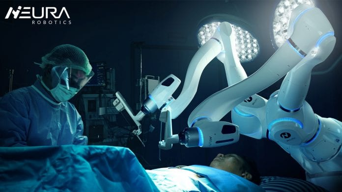

نقش رباتیک در پزشکی: انقلابی در درمان و مراقبتهای بهداشتی
رباتیک به عنوان یکی از تکنولوژیهای پیشرو، تأثیر عمیقی بر علوم پزشکی و حوزه سلامت گذاشته است. با پیشرفتهای چشمگیر در زمینه هوش مصنوعی و مهندسی مکانیک، رباتها به ابزاری ضروری برای بهبود کیفیت درمان، کاهش خطاهای انسانی و افزایش سرعت و دقت در فرایندهای پزشکی تبدیل شدهاند.
در ادامه به برخی از کاربردها و نقشهای کلیدی رباتیک در پزشکی اشاره خواهیم کرد.

انواع خدمات رباتیک پزشکی
در این بخش انواع خدمات رباتیک که در پزشکی استفاده میشوند توضیح داده شده است.
- رباتها در جراحیهای دقیق
- رباتها در توانبخشی و کمک به بیماران
- رباتهای تشخیصی و مراقبتی
- رباتهای داروساز
اعضای رباتیک به کمک افراد میآید
اعضای رباتیک، که به نام اندامهای مصنوعی پیشرفته نیز شناخته میشوند، یکی از نوآوریهای هیجانانگیز و تحولساز در دنیای پزشکی و تکنولوژی هستند. این فناوری به انسانهایی که دچار نقص عضو شدهاند یا عملکرد اندامهایشان به دلایلی مانند بیماری یا تصادف از دست رفته است، کمک میکند تا تواناییهای خود را دوباره به دست آورند و زندگی عادیتری را تجربه کنند.